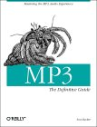

Click for
larger version
|
RipEnc is free software. If you'd like to support the effort that's gone into it, or would just like to learn more about MP3 technology in general, considering purchasing my book :)
|
O'Reilly and Associates
|
|
MP3: The Definitive Guide
|
|
Scot Hacker
|
The phenomenally popular MP3 algorithm lets users compress audio data to a fraction of its original size, and has led to a revolution in file-based music storage and distribution. MP3: The Definitive Guide is the bible of this phenomenon -- a fast-moving guide to the juicy bits for MP3 power users. What sets this book apart is its attention to detail, including coverage of legal issues, "home-brew" solutions, and concentration on audiophile concerns.
Nearly 400 pages long, MP3: The Definitive Guide will show you how the MP3 codec works, how to choose the best MP3 player or ripper/encoder for your platform, how to work with ID3 tags, playlists, skins, and plug-ins, and what to be careful of when it comes to equalization. The book introduces concepts related to building a virtual database of MP3 files, organizing large collections, burning custom compact discs, and building your own MP3 playback hardware for the home or car. The book also discusses formats and codecs currently competing with MP3. Users of "alternative" operating systems aren't left out -- in addition to coverage of Windows tools, you'll find screenshots, descriptions, and detailed how-to information for users of MacOS, Linux, and BeOS as well.
Read the back-cover text
This book has been reviewed by Slashdot.org
O'Reilly and Associates maintains a separate site for this book, where you can read sample chapters, find errata for the book, check out reader reviews, and read mini-essays not included in the book, including:
Table of Contents
Each section of the book is further divided into many, far more detailed subsections (not shown here). Two of the chapters are online in their entirety at O'Reilly.com (linked).
- 1 - The Nuts and Bolts of MP3
- MP3 Basics
- Rights, Piracy, and Politics
- 2 - How MP3 Works: Inside the Codec
- A "Perceptual" Codec
- The Anatomy of an MP3 File
- 3 - Getting and Playing MP3 Files
- Choosing and Using an MP3 Player
- Players by Platform
- Obtaining an MP3 Player
- Organizing Your Collection
- Equipment Considerations
- 4 - Playlists, Tags, and Skins: MP3 Options
- MP3 Options and Considerations
- Equalization and Sound Quality
- ID3 Tags and Playlists: The Virtual Database
- Skins: Dressing Up MP3 Players
- Plug-ins: Extending Your Reach
- Listening to MP3 Streams
- Performance Considerations
- 5 - Ripping and Encoding: Creating MP3 Files
- General Encoding Principles
- General Ripping Principles
- Ripping and Encoding Tools
- "Ripping" from Other Sources
- Roll Your Own Compact Discs
- 6 - Hardware, Portables, Home Stereos, and Kits
- Playing MP3 Through Your Home Stereo
- Portable Players
- Hand-Held Computers and Other Devices
- Home Stereo MP3 Players
- Car Players
- Kit Players
- 7 - The Not-So-Fine-Print: Legal Bits and Pieces
- The Rules of Engagement
- The Players
- 8 - Webcasting and Servers: Internet Distribution
- Fundamentals of Internet Distribution
- Offering Files for Download
- Webcasting: Real-Time MP3 Broadcasting
- An Interview with MP3.com's "High Geek"
- 9 - Competing Codecs and Other File Formats
- The Architectures
- The Codecs
- Appendices and Index
About the Author
Scot Hacker has been obsessed with music since his early teens, and has been a digital audiophile for half a decade. After earning a B.A. in Philosophy at UC Santa Cruz, he made a living writing reviews of jazz and improvised music for The Utne Reader and The Cadence Journal of Jazz and Blues before graduating to the role of Content Manager and Production Editor at ZDNet. Hacker's interest in digital audio and fine computer systems has evolved into a regular series of articles for PC Magazine, Byte.com, Windows Sources, ZiffNet, Japan's ASCII Magazine, and the CompuServe network, as well as television appearances and trade show gigs. Hacker is the author of the definitive The BeOS Bible, a best-selling guide to the high-performance operating system optimized for digital media, including audio compression, encoding, and playback.
Technical Editors and Contributors
From the book's Acknowledgements:
As with any book of this scope, the author did not work alone. I am much indebted to my editor Simon Hayes for helping to get this project off the ground and for his guidance in structuring and shaping this book in the "big picture." I am also most grateful for the many contributions made by our pool of technical editors:
- MP3.com's "High Geek" Sander van Zoest, who offered much "behind the scenes" information, especially on the broadcasting and streaming side of things, and for turning me on to MP3 products and technologies before they happened.
- mp3tech.org's Gabriel Bouvigne, who posesses a nearly encyclopedic knowledge of MPEG's technical arcana and who helped to flesh out the details of this book in numerous ways.
- Lifelong audiophile Mike Knapp, who can build high-end amplifiers in his sleep and who contributed immeasurably to Hi-Fi issues throughout the book.
- Bruno Prior, who literally built a house around an extensive room-to-room home MP3 network, and who seems to have used every MP3 tool on the planet extensively. Prior also contributed much on the topic of encoding from analog sources.
Ordering Information
Available in most book stores, or can be ordered online:
|
{kind=link}